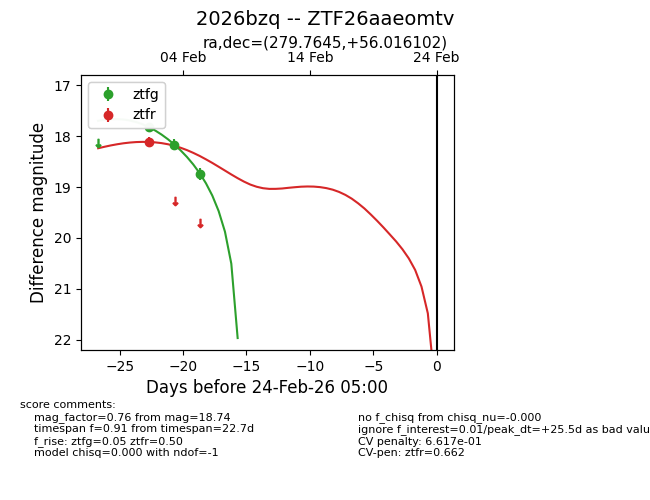
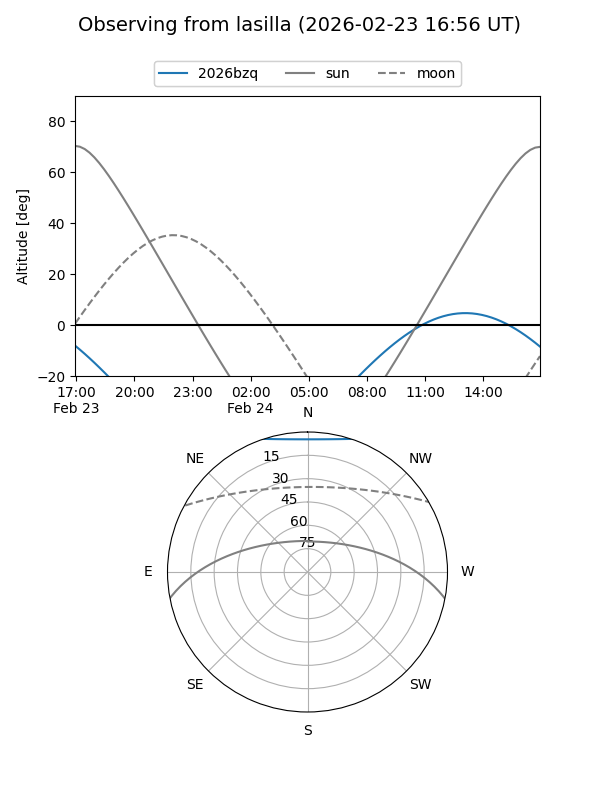
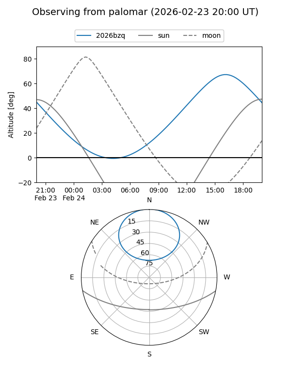

2026bzq
Target 2026bzq at 2026-02-24 09:08
Aliases and brokers:
FINK: link
Lasair: link
ALeRCE: link
TNS: link
YSE: link
alt names
ZTF26aaeomtv (ztf,fink_ztf)
2026bzq (tns,yse)
Coordinates:
equatorial (ra, dec) = 279.7645,+56.01610
equatorial (HMS+DMS) = 18:39:03.47,+56:00:57.97
galactic (l, b) = (85.3108,+23.88854)
Flags:
likely cv
Photometry:
last ztfg=18.74, ztfr=18.12
3 ztfg, 1 ztfr detections
Lightcurve

Visibility


Additional plots